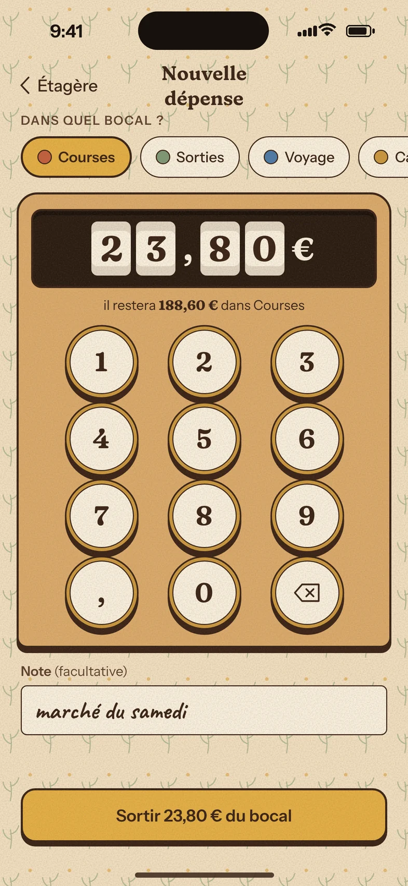
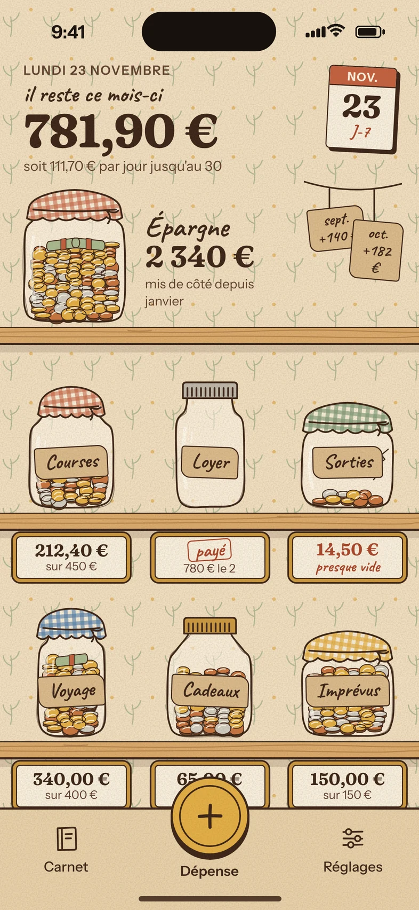
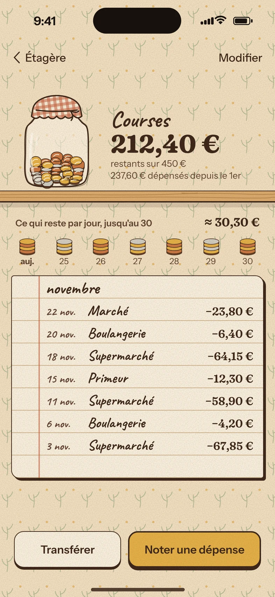
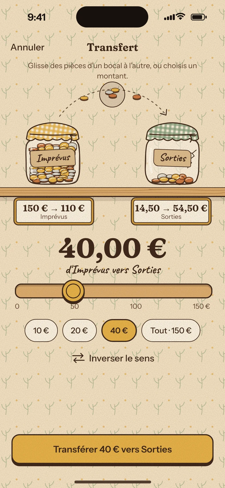
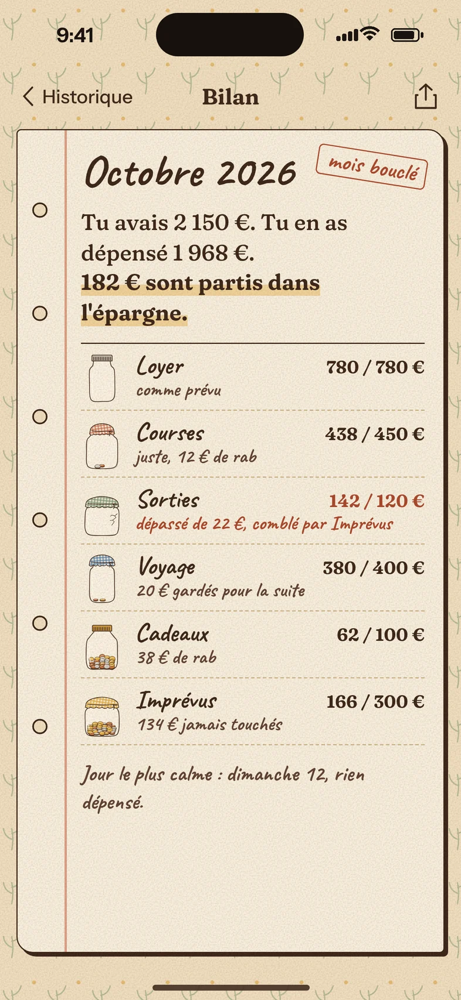

Une dépense, à la caisse.
Tape le montant sur le clavier, choisis le bocal, encaisse. Les pièces sortent du bocal et le compte du jour se met à jour.

Ta paie tombe dans une jarre, tu la ranges dans tes bocaux, et chaque dépense sort du bon. Un coup d'œil sur l'étagère, et tu sais ce qu'il reste.
sans compte, sans banque connectée

C'est le geste du 1er du mois dans Bocaux : ta paie arrive dans la jarre, et tu la répartis à la main entre tes bocaux.
Au clavier : chaque bocal est un bouton qui y range 50 €. Le bouton « Suivre mes cibles » remplit tous les bocaux d'un coup.
2 150,00 €
ta paie du mois, encore à répartir
Tape le montant sur le clavier, choisis le bocal, encaisse. Les pièces sortent du bocal et le compte du jour se met à jour.

Toutes les dépenses du mois, écrites à la main, et ce que tu peux encore dépenser par jour jusqu'à la paie.

Fais glisser quelques pièces d'un bocal à l'autre. Rien ne disparaît, tout se voit.

À la fin du mois, le bilan tient sur une feuille. Ce qui reste peut partir tout seul dans l'Épargne.

Tes bocaux vivent sur ton iPhone. La sauvegarde passe par ton propre iCloud, que toi seul peux lire, et tu peux la couper dans les réglages.